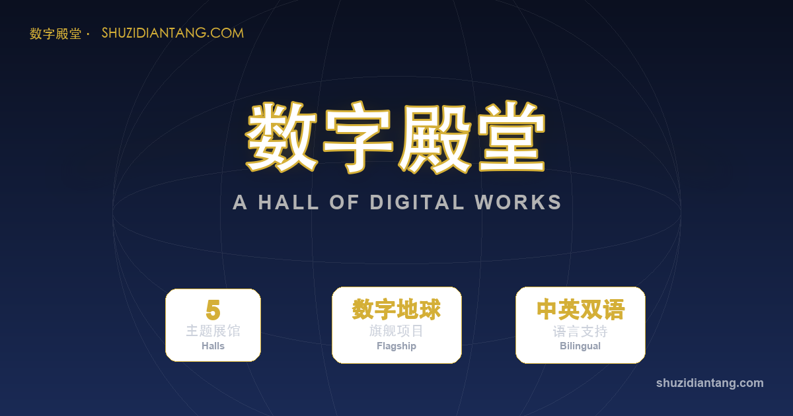
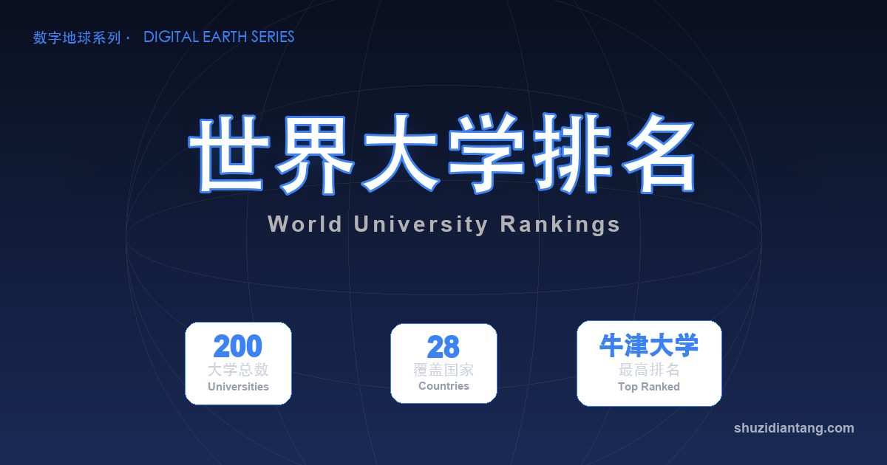
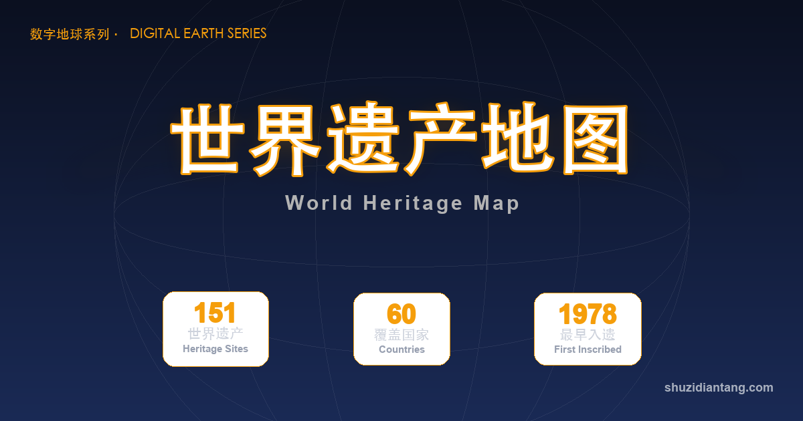
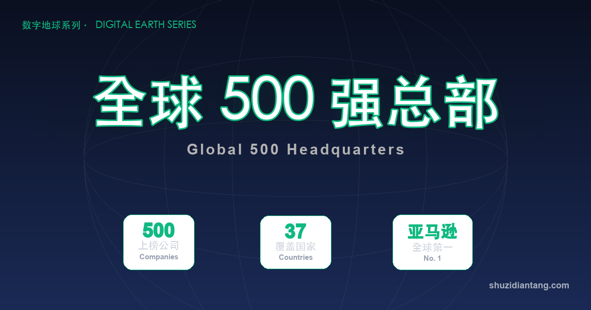

一个会转的地球，装下了大学、世界遗产和 500 强
你有没有想过：人类的知识，如果摆在一个真实的地球上，会是什么样子？
世界 200 强大学分布在哪里？UNESCO 世界遗产都藏在哪？财富 500 强的总部，又如何点亮各大洲？
我把这些数据，全都搬进了一个可以旋转、缩放、点击的 3D 地球。
这个系列，我叫它「数字地球」。

数字地球 · 统一门户
一、这是一个什么样的地球
一句话：把重量级数据，放到一个真实的地球仪上看。
它基于 NASA 蓝大理石 5400 高清贴图，带地形凹凸和大气层效果，中英双语，手机电脑都能用。
点任何一个标记，地球会"飞"过去，右侧弹出详情卡片；想看更多，还能一键调取维基百科资料。
五个词概括：看得见、转得动、点得开、查得到、学得进。
二、三个主题，三种看世界的方式
① 全球大学 200 强 —— THE 2026 排名前 200 的大学，加 32 个大学城，学术版图一眼看尽。

主题一 · 全球大学 200 强
② 世界遗产 Top 151 —— UNESCO 名录精选，每处遗产带入选标准和濒危警示。哪些瑰宝正在消失，地球会告诉你。

主题二 · 世界遗产 Top 151
③ 财富 500 强总部 —— 500 个坐标，100% 覆盖；圆的大小代表营收，颜色代表国家。全球财富版图，转一圈就懂。

主题三 · 财富 500 强总部
三、3 天做出 3 个 v1.0，速度从哪来
这三个主题不是攒了一年才做完的——前三个是 3 天里连发 3 个版本。
快，靠的是三件事：
第一，数据管线全部脚本化。 用 Python 抓取美国地质调查局（USGS）、全球火山计划（GVP）、THE 排名和 Wikimedia 数据——光是火山原始数据就有 173MB，靠人肉整理根本不可能。
第二，底座统一。 三个应用曾经各复制一份底层代码，慢慢"漂移"成三个样子。我把它们合并成一个共享底座后，新主题只需要写"数据 + 视觉"，一个目录就能上线。
第三，AI 全程参与。 从数据清洗到组件 bug，很多卡壳的地方是 AI 帮着查文档、找原因翻过去的。
换句话说：以前做这样一个应用，需要一支团队；现在，一个人 + AI，就能跑出"一天一个主题"的节奏。
四、为什么要把数据搬上地球
因为扁平表格记不住，3D 地球忘不掉。
位置感，会让数据变成直觉——这是任何图表都替代不了的。
接下来的计划：让数据自动更新，让每个主题自动长出推广内容——让这颗地球自己生长。
写在最后
👉 亲手转一转这颗地球：劳伦斯在上海 · 地球厅
👉 制作过程与源码（开源）：github.com/historyreview-code/digital-earth-series
我是站主，接下来，我会继续介绍本站编程作品的思路和经验，也会分享一些日常学习点滴。
← 返回手记